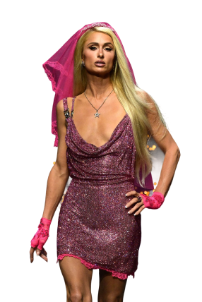
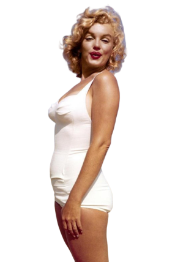
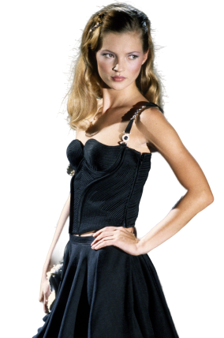
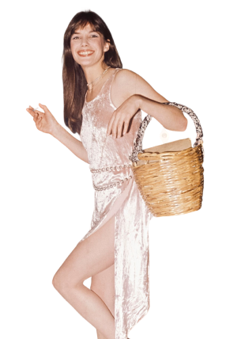

It girl
Una de las figuras más representativas dentro del marketing de influencias ha sido la it girl.
Entender qué es una it girl te permite identificar cómo se construye el deseo en moda. No se trata solo de visibilidad, sino de la capacidad de convertir una identidad en referencia y trasladar ese valor al consumo.
Este mecanismo sigue activo hoy y es la base sobre la que operan muchas estrategias de marketing de influencia.



